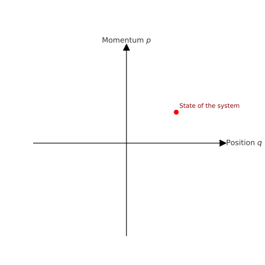

Mathematical formalsim of Quantum Mechanics#
We begin by reviewing the formalism of quantum mechanics which is assumed to be known from previous courses. Althought most of the material should be known to everybody we will reformulate the theory in a more general and abstract mathematical framework. We begin by introducing the space of quantum states and discuss some difference between states of physical systems in classical and in quantum mechanics.
Classical states#
In classical physics, the state of a system—such as a point particle—is fully specified by its position and momentum. Mathematically, this corresponds to a point in a phase space. For a single classical point particle moving in three-dimensional space, the state is given by three position coordinates and three momentum components. Hence, the phase space of such a system is the set \(\mathbb{R}^6\).
More generally, for a system of \(N\) classical point particles, each with three position and three momentum degrees of freedom, the full classical state space (phase space) is \(\mathbb{R}^{6N}\). Each point in this \(6N\)-dimensional space corresponds to a complete specification of the instantaneous state of the system.
The term “set” in this context refers to the collection of all possible such states. For those familiar with classical mechanics, the classical phase space is a manifold equipped with a natural symplectic structure in Hamiltonian mechanics, which allows the formulation of equations of motion in terms of so-called Poisson brackets.
üñºÔ∏è Illustration: Classical Phase Space for One Particle in 1D#
A simplified example: for a single particle moving in one dimension, the state is given by its position \(q\) and momentum \(p\)). The phase space is \(\mathbb{R}^2\), and a point in this plane represents the complete classical state of the system.

Quantum States#
In quantum mechanics, the situation is fundamentally different from classical physics.
Experiments such as the double-slit experiment and the Stern–Gerlach experiment demonstrate that quantum systems can exist in superpositions of states. That is, if a system can be in state \(\psi_1\) and also in state \( \psi_2 \), then any linear combination of these two states is also a physically realizable state:
This principle of superposition has no classical counterpart.
In classical mechanics, adding two points in phase space yields a new point—mathematically—but it does not represent a physically meaningful state.
üîÅ Linearity of Quantum Dynamics#
The time-dependent Schrödinger equation, which governs the evolution of quantum states, is linear:
This means:
If \( \psi_1(t)\) and \(\psi_2(t)\) are solutions, then so is any combination:
The evolution of superpositions is predictable and well-defined.
This property is a cornerstone of quantum theory and leads to many counterintuitive phenomena, such as interference, tunneling, and entanglement.
In the following, we introduce a precise mathematical framework of quantum mechanics that formalizes the above observations. We begin with an axiom defining what a state space is:
The state of a quantum system is represented by a unit vector in a complex Hilbert space $ \mathcal{H} $. Each physical (pure) state corresponds to a ray in $ \mathcal{H} $, i.e., a one-dimensional subspace spanned by a unit vector $|\psi\rangle \in \mathcal{H} $.
Remark: This implies that two state vectors differing only by a global phase factor represent the same physical state. That is, $ |\psi\rangle $ and $ e^{i\theta}|\psi\rangle $, with $ \theta \in \mathbb{R} $, correspond to the same state.
üìò Mathematical Foundations: From Vector Spaces to Hilbert Spaces#
In order to understand the state axiom we review the mathematical foundation of of Hilbert spaces. In a nutshell, Hilbert spaces are specially structured vector spaces equipped with inner products and some additional properties related to convergence of infinite series of vectors. We start with the definition of a vector space:
üîπ Definition: Vector Space#
Let \(\mathbb{F}\) be a field (in quantum mechanics, typically \(\mathbb{C}\)). A vector space over \(\mathbb{F}\) is a set \(V\) together with:
A binary operation called vector addition: $$
: V \times V \rightarrow V,\quad (|\psi\rangle, |\phi\rangle) \mapsto |\psi\rangle + |\phi\rangle $$
A scalar multiplication operation: $\( \cdot : \mathbb{F} \times V \rightarrow V,\quad (a, |\psi\rangle) \mapsto a|\psi\rangle \)$
such that the following axioms hold for all \(|\psi\rangle, |\phi\rangle, |\chi\rangle \in V\) and \(a, b \in \mathbb{F}\):
Commutativity of addition
$\( |\psi\rangle + |\phi\rangle = |\phi\rangle + |\psi\rangle \)$Associativity of addition
$\( (|\psi\rangle + |\phi\rangle) + |\chi\rangle = |\psi\rangle + (|\phi\rangle + |\chi\rangle) \)$Existence of zero vector: There exists a vector \(|0\rangle \in V\) such that
$\( |\psi\rangle + |0\rangle = |\psi\rangle \)$Existence of additive inverse: For each \(|\psi\rangle \in V\), there exists a vector \(-|\psi\rangle\) such that
$\( |\psi\rangle + (-|\psi\rangle) = |0\rangle \)$Compatibility with scalar multiplication
$\( a(b|\psi\rangle) = (ab)|\psi\rangle \)$Multiplicative identity:
$\( 1 \cdot |\psi\rangle = |\psi\rangle \)$Distributivity over vector addition
$\( a(|\psi\rangle + |\phi\rangle) = a|\psi\rangle + a|\phi\rangle \)$Distributivity over scalar addition
$\( (a + b)|\psi\rangle = a|\psi\rangle + b|\psi\rangle \)$
üîπ Motivation for the Inner Product#
In elementary quantum mechanics, we learned that the product of a wavefunction with its complex conjugate, \(\psi^*(x)\psi(x)\), corresponds physically to a probability density for the position of a particle.
Now, the definition of a vector space (as given above) allows us to add vectors (states) and to scale them by complex numbers. However, this structure does not yet permit us to compute products of vectors, such as those needed to evaluate:
Probability amplitudes: \(\langle \phi | \psi \rangle\)
Expectation values
Transition probabilities
These operations require an additional structure: a way to pair vectors and obtain a scalar (a complex number), reflecting the overlap or projection of one state onto another.
This motivates the introduction of the inner product.
üîπ Definition: Inner Product#
Let \(V\) be a complex vector space. An inner product on \(V\) is a function
that assigns to each pair of vectors \((|\phi\rangle, |\psi\rangle)\) a complex number \(\langle \phi | \psi \rangle\), and satisfies the following axioms for all \(|\phi\rangle, |\psi\rangle, |\chi\rangle \in V\) and scalars \(a \in \mathbb{C}\):
Conjugate symmetry: $\( \langle \phi | \psi \rangle = {\langle \psi | \phi \rangle^*} \)$
Linearity in the second argument: $\( \langle \phi | \psi + \chi \rangle = \langle \phi | \psi \rangle + \langle \phi | \chi \rangle \)$
Homogeneity in the second argument: $\( \langle \phi | a \psi \rangle = a \langle \phi | \psi \rangle \)$
Positive-definiteness: $\( \langle \psi | \psi \rangle \geq 0, \quad \text{and} \quad \langle \psi | \psi \rangle = 0 \iff |\psi\rangle = |0\rangle \)$
üìù Note: In mathematics, linearity is often taken in the first argument. In physics, however, it is conventional to define linearity in the second argument, as above.
üîπ Definition: Norm#
Let \(V\) be a vector space over the field \(\mathbb{F}\) (typically \(\mathbb{C}\) in quantum mechanics). A norm on \(V\) is a function
that assigns to each vector a non-negative real number — interpreted as the length or magnitude of the vector — and satisfies the following axioms for all \(|\psi\rangle, |\phi\rangle \in V\) and all scalars \(a \in \mathbb{F}\):
Positive-definiteness: $\( \| |\psi\rangle \| \geq 0, \quad \text{and} \quad \| |\psi\rangle \| = 0 \iff |\psi\rangle = |0\rangle \)$
Homogeneity (absolute scalability): $\( \| a |\psi\rangle \| = |a| \cdot \| |\psi\rangle \| \)$
Triangle inequality: $\( \| |\psi\rangle + |\phi\rangle \| \leq \| |\psi\rangle \| + \| |\phi\rangle \| \)$
üîπ Norm Induced by Inner Product#
If \(V\) is equipped with an inner product \(\langle \cdot | \cdot \rangle\), the norm is naturally induced by that same inner product:
In order to prove that the scalar product induces the norm we now present our first theorem that we will use on several ocasions later. The theorem introduces a famous inequality called Cauchy-Schwarz-Bunyakowsky inequality:
üî∏ Theorem: Cauchy‚ÄìSchwarz‚ÄìBunyakowsky Inequality#
Let \(|\psi\rangle\) and \(|\phi\rangle\) be vectors in a complex inner product space (e.g. a Hilbert space). Then:
Equivalently, using the norm induced by the inner product:
üîπ Proof#
We define a (complex-valued) function of an scalar parameter \(\lambda \in \mathbb{C}\):
By the defining properties of the inner product this is certainly non-negative for all \(\lambda\).
We now expand \(f(\lambda)\) using the properties of the inner product:
[ \begin{aligned} f(\lambda) &= \langle \psi | \psi \rangle + \lambda \langle \phi | \psi \rangle +{\lambda}^* \langle \psi | \phi \rangle + |\lambda|^2 \langle \phi | \phi \rangle \ &= \langle \psi | \psi \rangle + 2 \operatorname{Re} \left( \lambda \langle \phi | \psi \rangle \right) + |\lambda|^2 \langle \phi | \phi \rangle \end{aligned} ]
To minimize this non-negative function, we choose for \(\lambda\):
Substituting this into \(f(\lambda)\) gives:
Since \(f(\lambda) \geq 0\) for all \(\lambda\), in particular it must be non-negative at this minimizing value of \(\lambda\):
Rearranging gives the desired inequality:
This completes the proof. ✓
ü߆ Physical Interpretation#
The inequality expresses the fact that the overlap between two quantum states cannot exceed the product of their norms.
Equality holds if and only if the vectors are linearly dependent: $\( |\psi\rangle = \alpha |\phi\rangle \quad \text{for some } \alpha \in \mathbb{C} \)$
In this case, the vector \(|\psi\rangle + \lambda |\phi\rangle\) becomes zero for a suitable \(\lambda\).
Now that we are equipped with the CSB inequality, we can prove that the scalar product indeed induces a norm!
üî∏ Theorem: The Inner Product Induces a Norm#
Let \(V\) be a complex inner product space equipped with an inner product \(\langle \cdot | \cdot \rangle\). Define, for all \(|\psi\rangle \in V\),
Then this function \(\| \cdot \| : V \to \mathbb{R}_{\geq 0}\) defines a norm on \(V\).
üîπ Proof#
We must verify the three axioms of a norm:
(1) Positive-definiteness#
We show that:
\(\| |\psi\rangle \| \geq 0\) for all \(|\psi\rangle \in V\)
\(\| |\psi\rangle \| = 0\) if and only if \(|\psi\rangle = |0\rangle\)
Since \(\langle \psi | \psi \rangle\) is a real, non-negative number by the properties of the inner product, its square root exists and is non-negative:
Furthermore, \(\langle \psi | \psi \rangle = 0\) if and only if \(|\psi\rangle = |0\rangle\) by the positive-definiteness of the inner product.
✅ This proves positive-definiteness.
(2) Homogeneity#
We need to show that for all \(a \in \mathbb{C}\) and all \(|\psi\rangle \in V\):
Compute:
[ \begin{aligned} | a|\psi\rangle | &= \sqrt{ \langle a\psi | a\psi \rangle } \ &= \sqrt{ a^* a \langle \psi | \psi \rangle } \ &= \sqrt{ |a|^2 \cdot \langle \psi | \psi \rangle } \ &= |a| \cdot \sqrt{ \langle \psi | \psi \rangle } = |a| \cdot | |\psi\rangle | \end{aligned} ]
✅ Homogeneity is satisfied.
(3) Triangle inequality#
Finally, we need to show that for all \(|\psi\rangle, |\phi\rangle \in V\):
This is the point where we use the CSB inequality.
We expand the squared norm:
Using the property of complex numbers that:
and applying the Cauchy–Schwarz inequality:
we obtain:
Taking square roots:
✅ The triangle inequality is verified.
üî∏ Corollary: Inner Product Spaces Are Normed Spaces#
Let \(V\) be a complex inner product space with inner product \(\langle \cdot | \cdot \rangle\).
Then the function $\( \| |\psi\rangle \| := \sqrt{ \langle \psi | \psi \rangle } \)\( defines a **norm** on \)V$. Hence, every inner product space is also a normed vector space.
This means we can use all geometric notions associated with normed spaces — such as:
Lengths of vectors
Distance between vectors: $\( d(|\psi\rangle, |\phi\rangle) := \| |\psi\rangle - |\phi\rangle \| \)$
Limits and Cauchy sequences: $\( \text{A sequence } |\psi_n\rangle \text{ is Cauchy if } \forall \varepsilon > 0, \exists N \text{ s.t. } \| |\psi_n\rangle - |\psi_m\rangle \| < \varepsilon \text{ for all } n,m > N \)$
üî∏ Definition: Hilbert Space#
Let \(V\) be a complex inner product space with inner product \(\langle \cdot | \cdot \rangle\) and induced norm \(\| \cdot \|\).
We say that \(V\) is a Hilbert space if it is complete with respect to this norm i. e. every Cauchy sequence in \(V\) converges to a vector in \(V\): $\( \text{If } \| |\psi_n\rangle - |\psi_m\rangle \| \to 0 \text{ as } n,m \to \infty, \quad \text{then } \exists |\psi\rangle \in V \text{ such that } \| |\psi_n\rangle - |\psi\rangle \| \to 0 \)$
ü߆ Physical Significance#
In quantum mechanics:
The space of physical (pure) states is modeled by a Hilbert space.
Completeness ensures that infinite linear combinations (e.g. Fourier series, wave packets) converge to physical states.
Think of a quantum wavefunction built as an infinite sum of basis states (e.g., discrete energy eigenstates of some system such sa harmonic oscillator etc.):
We want this sum to converge to a state in our space. Completeness ensures that such sums (Cauchy sequences of partial sums) produce a valid, well-defined quantum state.
Without completeness, we might build a sequence of better and better approximations — but never actually reach a physical state!
üîç Summary of Structure#
We now have the following hierarchy:
Structure |
Additional Data |
Properties Enforced |
|---|---|---|
Vector space |
Addition and scalar multiplication |
Linear algebra rules |
Inner product space |
Inner product $\langle \cdot |
\cdot \rangle$ |
Normed space |
Norm $| \cdot | = \sqrt{\langle \cdot |
\cdot \rangle}$ |
Hilbert space |
Completeness |
Infinite limits are well-defined within space |
üî∏ Linear Maps, Operators, and Functionals#
A natural way to understand any mathematical structure is to study mappings that preserve that structure. This idea is in the core of mathematics and also physics: we gain insight into a structure or a system not only by studying its elements, but by examining its symmetries and transformations that respect the rules of the structure.
In the case of vector spaces, the core structure is linearity: vector addition and scalar multiplication. So the natural class of mappings to study are those that preserve linear sturcture. Such maps must have two propersties: additivity and homogeneity.
In the following we define such maps depending on what the domain and the target space is. Depending on that slightly different terminology is used.
üîπ Definition: Linear Map#
Let \( V \) and \( W \) be vector spaces over the same field \(\mathbb{F} \) (typically \( \mathbb{C} \)).
A function\(T: V \to W\) is called a linear map if it satisfies the following two conditions for all \( |\psi\rangle, |\phi\rangle \in V\) and all scalars \(a \in \mathbb{F} \):
Additivity: $\( T(|\psi\rangle + |\phi\rangle) = T|\psi\rangle + T|\phi\rangle \)$
Homogeneity: $\( T(a |\psi\rangle) = a \cdot T|\psi\rangle \)$
üîπ Definition: Linear Operator#
A linear operator is a linear map from a vector space to itself.
Let \( V \) be a vector space over \(\mathbb{F}\). A function \( A: V \to V \) is a linear operator if:
Additivity: $\( A(|\psi\rangle + |\phi\rangle) = A|\psi\rangle + A|\phi\rangle \)$
Homogeneity: $\( A(a |\psi\rangle) = a \cdot A|\psi\rangle \)$
üîπ Definition: Linear Functional#
Let \(V\) be a vector space over \( \mathbb{F}\). A linear functional is a linear map from \( V\) to the field\( \mathbb{F} \):
It satisfies the same linearity conditions:
Additivity: $\( f(|\psi\rangle + |\phi\rangle) = f(|\psi\rangle) + f(|\phi\rangle) \)$
Homogeneity: $\( f(a |\psi\rangle) = a \cdot f(|\psi\rangle) \)$
Linear functionals are the elements of the dual space ( V^* ), which we will define next.
In Dirac notation, linear functionals appear as bras as we will see later: $\( \langle \psi | : V \to \mathbb{C}, \quad |\phi\rangle \mapsto \langle \psi | \phi \rangle \)$
üî∏ The Riesz Representation Theorem (Finite-Dimensional Case)#
Let \(V\) be a finite-dimensional complex inner product space with inner product \(\langle \cdot | \cdot \rangle\).
Then for every linear functional \(f \in V^*\) (that is, every linear map \(f: V \to \mathbb{C}\)), there exists a unique vector \(|\phi\rangle \in V\) such that:
This is called the Riesz representation of the functional \(f\) by the vector \(|\phi\rangle\).
üîπ Proof (Finite-Dimensional Case)#
Let \(\dim V = n\) and let \(\{ |e_i\rangle \}_{i=1}^n\) be an orthonormal basis of \(V\).
Let \(f \in V^*\) be a linear functional. We want to find a vector \(|\phi\rangle \in V\) such that:
Write any \(|\psi\rangle \in V\) as:
Since \(f\) is linear:
Now define:
Then compute:
[ \begin{aligned} \langle \phi | \psi \rangle &= \left\langle \sum_{i=1}^n \overline{f(|e_i\rangle)} |e_i\rangle ,\middle|, \sum_{j=1}^n \psi_j |e_j\rangle \right\rangle \ &= \sum_{i,j=1}^n f(|e_i\rangle)^* \psi_j \langle e_i | e_j \rangle \ &= \sum_{i=1}^n f(|e_i\rangle)^* \psi_i \ &= \sum_{i=1}^n \psi_i f(|e_i\rangle) = f(|\psi\rangle) \end{aligned} ]
Thus \(f(|\psi\rangle) = \langle \phi | \psi \rangle\) for all \(|\psi\rangle\), and the vector \(|\phi\rangle\) is unique due to the non-degeneracy of the inner product.
✓ This completes the proof.
üîπ Defining Bras Using Riesz#
We now define the dual vector (bra) corresponding to a ket \(|\psi\rangle \in V\) as the unique linear functional:
By the Riesz theorem, this bra \(\langle \psi |\) is an element of the dual space \(V^*\).
This defines a bijection: $\( V \xrightarrow{\text{Riesz}} V^*, \quad |\psi\rangle \mapsto \langle \psi | \)$
ü߆ Interpretation#
The inner product \(\langle \psi | \phi \rangle\) is interpreted as applying the bra \(\langle \psi |\) to the ket \(|\phi\rangle\).
The Riesz theorem tells us that every linear functional on \(V\) arises in this way.
This justifies Dirac’s notation: $\( \langle \psi | \phi \rangle = \text{“apply the functional } \langle \psi | \text{ to the vector } |\phi\rangle”} \)$
üîç Summary#
Concept |
Space |
Notation |
|---|---|---|
Ket (state vector) |
\(V\) |
$ |
Bra (dual vector) |
\(V^*\) |
$\langle \psi |
Inner product |
$\langle \cdot |
\cdot \rangle$ |
Linear functional |
\(f \in V^*\) |
$f( |
üî∏ Riesz Representation Theorem in Infinite Dimensions#
In the finite-dimensional case, the Riesz Representation Theorem gives a bijective correspondence between a Hilbert space \(V\) and its dual space \(V^*\) via the inner product:
This result extends — with some technical care — to infinite-dimensional Hilbert spaces.
üîπ Infinite-Dimensional Version (Riesz‚ÄìFr√©chet Theorem)#
Let \(\mathcal{H}\) be a (possibly infinite-dimensional) Hilbert space over \(\mathbb{C}\).
Then for every continuous linear functional \(f : \mathcal{H} \to \mathbb{C}\), there exists a unique vector \(|\phi\rangle \in \mathcal{H}\) such that:
ü߆ The crucial difference is the requirement that \(f\) be continuous. In infinite dimensions, not all linear functionals are continuous ‚Äî but the Riesz representation holds exactly for those that are.
This general form justifies identifying the continuous dual \(\mathcal{H}^*\) with \(\mathcal{H}\) itself via the inner product.
üî∏ From Dual Vectors to Adjoint Operators#
Now that we understand bras as elements of the dual space \(V^*\), and the inner product as a bridge between kets and bras via Riesz, we can move on to defining the adjoint of a linear operator.
üîπ Definition: Adjoint Operator#
Let \(A : \mathcal{H} \to \mathcal{H}\) be a linear operator on a Hilbert space \(\mathcal{H}\).
The adjoint operator \(A^\dagger : \mathcal{H} \to \mathcal{H}\) is the unique operator satisfying:
In words: the action of \(A\) on the ket \(|\psi\rangle\), tested by the bra \(\langle \phi |\), is equivalent to the action of \(A^\dagger\) on the bra.
This relation defines \(A^\dagger\) completely, due to the non-degeneracy of the inner product.
üîπ Dirac Notation Summary#
The adjoint operator is defined by the identity:
This is the Dirac formulation of the dual action of operators, and it leads directly to the important operator classes:
Hermitian operators: \(A^\dagger = A\)
Unitary operators: \(A^\dagger = A^{-1}\)
We’ll define and study both next.
üî∏ Example: The Momentum Operator Is Unbounded on ( L^2(\mathbb{R}) )#
Let \(\mathcal{H} = L^2(\mathbb{R})\), the Hilbert space of square-integrable complex-valued functions:
In quantum mechanics, the momentum operator in the position representation is defined (formally) as:
This operator is linear, but we will now show that it is not bounded, and therefore not continuous on \(L^2(\mathbb{R})\).
üîπ Smooth Bump Function Example#
Let us define a fixed smooth compactly supported function \(\phi(x) \in \mathcal{S}(\mathbb{R})\) by:
This function is:
Infinitely differentiable (\(\phi \in C^\infty\))
Compactly supported in \((-1, 1)\)
Rapidly decaying near the boundaries, with all derivatives vanishing at \(x = \pm 1\)
Now define a family of rescaled functions:
Each \(\psi_n \in \mathcal{S}(\mathbb{R}) \subset L^2(\mathbb{R})\), and:
\(\|\psi_n\| = 1\)
\(\psi_n\) becomes increasingly localized around \(x = 0\) as \(n \to \infty\)
üîπ Compute the Norm of the Momentum Operator#
Apply the momentum operator:
So the norm becomes:
[ \begin{aligned} | \hat{p} \psi_n |^2 &= \hbar^2 n^3 \cdot \frac{1}{|\phi(n \cdot)|^2} \cdot \int_{-\infty}^\infty |\phi’(n x)|^2 dx \ &= \hbar^2 n^3 \cdot \frac{1}{|\phi(n \cdot)|^2} \cdot \frac{1}{n} \int_{-\infty}^\infty |\phi’(u)|^2 du \quad (u = n x) \ &= \hbar^2 n^2 \cdot \frac{1}{|\phi(n \cdot)|^2} \cdot \int_{-\infty}^\infty |\phi’(u)|^2 du \end{aligned} ]
Since \(\|\phi(n \cdot)\|^2 = \frac{1}{n} \|\phi\|^2\), this gives:
✅ So even though \(\|\psi_n\| = 1\), we find that \(\| \hat{p} \psi_n \| \to \infty\).
üîπ Conclusion#
The momentum operator \(\hat{p} = -i\hbar \frac{d}{dx}\) is unbounded
It is not defined on all of \(L^2(\mathbb{R})\)
It acts only on a dense subspace of sufficiently smooth functions (e.g., the Schwartz space \(\mathcal{S}(\mathbb{R})\))
ü߆ Physical Insight#
In infinite-dimensional quantum mechanics:
Important operators like \(\hat{p}\) and \(\hat{H}\) are often unbounded, and must be treated with care.
This motivates:
Careful attention to domains of definition
The study of self-adjointness and spectral theory for unbounded operators
The time evolution of a closed quantum system is governed by a unitary transformation. If the system is in state $|\psi(t_0)\rangle$ at time $t_0$, its state at a later time $t$ is given by \[ |\psi(t)\rangle = U(t, t_0)|\psi(t_0)\rangle, \] where $U(t, t_0)$ is a unitary operator on $\mathcal{H}$.